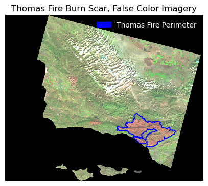
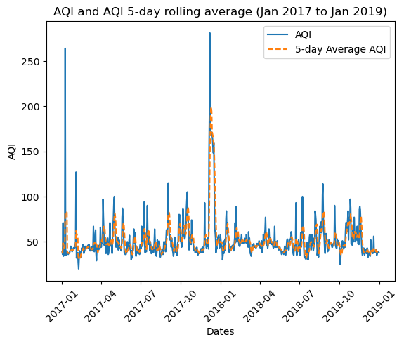

# importing general libraries
import os
import numpy as np
import pandas as pd
#importing task specific libraries
import geopandas as gpd
import matplotlib.pyplot as plt
import matplotlib.patches as mpatches #creating legends
import shapely
import xarray as xr
import rioxarray as rioxr
from shapely.geometry import Polygon
from rasterio.features import rasterize #rasterizing polygons📦 Repo Link: https://github.com/floraham/thomas_fire_analysis
This repository contains a Jupyter Notebook (.ipynb) using Python to visualize the Thomas Fire’s Burn scar and AQI impacts in Santa Barbara, CA. We use three datasets to conduct this analysis (two for the burn scar visualization, one for AQI).

About This Project
The Thomas Fire of December 2017, recognized as California’s largest recorded wildfire up to that point, encompassed approximately 281,893 acres in Ventura County. It prompted the evacuation of more than 104,607 residents and tragically resulted in two fatalities. This analysis examines the fire’s environmental impacts, using satellite data and fire perimeter shapefiles to create a false color image of the fire scar and assess its influence on air quality in Santa Barbara. The utilization of vector and raster data, along with basic time series analysis, aims to provide a data-driven understanding of the environmental consequences stemming from the Thomas Fire.
Purpose:
This exercise aims to: 1) create a false color image showing the fire scar of the Thomas fire in 2017 2) visualize the Thomas fire’s impact on air quality in Santa Barbara
Highlights of analysis:
- Fetch vector data from an online repository
- Visualize raster data using false color imagery
- Time series analysis
Dataset descriptions:
Landsat Burn Scar Data
- A simplified collection of bands (red, green, blue, near-infrared and shortwave infrared) from the Landsat Collection 2 Level-2 atmosperically corrected surface reflectance data, collected by the Landsat 8 satellite.
California Fire Perimeters
- A shapefile of fire perimeters in California during 2017. The complete file can be accessed in the CA state geoportal.
AQI Data
- We use Air Quality Index (AQI) data from the US Environmental Protection Agency to visualize the impact on the AQI of the 2017 Thomas Fire in Santa Barbara County.
References to datasets.
Landsat Data: The data was accessed and pre-processed in the Microsoft Planetary Computer to remove data outside land and coarsen the spatial resolution (Landsat Collection in MPC).
CA Shapefile: The complete file can be accessed in the CA state geoportal (see previous link). A local copy is stored in a hidden folder in this repo. (Accessed November, 2023)
AQI Data: https://aqs.epa.gov/aqsweb/airdata (Accessed October, 2023).
Accessing AQI data: 1. Go to EPA’s website on Air Quality Data Collected at Outdoor Monitors Across the US. 2. Under “Download Data” click on “Pre-generated Data Files” 3. Click on “Tables of Daily AQI” 4. Copy the URL to the 2017 Daily AQI by County zip file
daily_aqi_by_county_2017.zip5. Read in the data from the URL using thepd.read_csvfunction. We store it asaqi_17. 6. Read in the data for the 2018 Daily AQI by County zip file. We store it asaqi_18.
Importing Libraries and Functions
Importing datasets
#<-----BURN SCAR------->
# Open the LANDSAT NetCDF file using regular open_rasterio() method
landsat = rioxr.open_rasterio(os.path.join(os.getcwd(), 'data_fire', 'landsat8-2018-01-26-sb-simplified.nc'))
#open california fire perimeters file
ca_fire = gpd.read_file('~/thomas_fire_analysis/data_fire/California_Fire_Perimeters')
#<------AQI-DATA--------->
## AQI data for 2017
aqi_17 = pd.read_csv("https://aqs.epa.gov/aqsweb/airdata/daily_aqi_by_county_2017.zip")
## AQI data for 2018
aqi_18 = pd.read_csv("https://aqs.epa.gov/aqsweb/airdata/daily_aqi_by_county_2018.zip")Part 1: Visualizing Thomas Fire Burn Scar
Data Exploration: Understanding the dataset structures
We simply print columns to look at ca_fire. Thomas fire will likely be a name under “FIRE_NAME” column. It’s also got polygon geometries of the fire perimeters stored in the geometry column.
ca_fire.columnsIndex(['index', 'OBJECTID', 'YEAR_', 'STATE', 'AGENCY', 'UNIT_ID', 'FIRE_NAME',
'INC_NUM', 'ALARM_DATE', 'CONT_DATE', 'CAUSE', 'C_METHOD', 'OBJECTIVE',
'GIS_ACRES', 'COMMENTS', 'COMPLEX_NA', 'COMPLEX_IN', 'IRWINID',
'FIRE_NUM', 'DECADES', 'SHAPE_Leng', 'SHAPE_Area', 'geometry'],
dtype='object')#looking at the landsat data to understand its structure
print(landsat)<xarray.Dataset>
Dimensions: (y: 731, x: 870, band: 1)
Coordinates:
* y (y) float64 3.952e+06 3.952e+06 ... 3.756e+06 3.755e+06
* x (x) float64 1.213e+05 1.216e+05 ... 3.557e+05 3.559e+05
* band (band) int64 1
spatial_ref int64 0
Data variables:
red (band, y, x) float64 ...
green (band, y, x) float64 ...
blue (band, y, x) float64 ...
nir08 (band, y, x) float64 ...
swir22 (band, y, x) float64 ...Updates the files and project them into the same CRS
# drop the dimensions
landsat = landsat.squeeze().drop('band')
#see if crs's are the same
print(landsat.rio.crs == ca_fire.crs) ## no! they are not the same. We'll have to convert them to the same CRS.
## reproject ca_fire crs to landsat crs
ca_fire = ca_fire.to_crs(landsat.rio.crs)
print('CRS match:', ca_fire.crs == landsat.rio.crs)False
CRS match: TruePlotting a true color image of Landsat data using red, green, and blue.
To plot a true color image of Landsat using R, G, B bands, we first have to adjust the scale used for plotting the bands to get a true color image. If we plot without adjusting, the image will be black and white. The issue here is the clouds: their RGB values are outliers and cause the other values to be squished when plotting. Instead, we include a robust parameter rescale.
# parameter robust (bool, optional) – If True and vmin or vmax are absent, the colormap range is computed with 2nd and 98th percentiles instead of the extreme values.
landsat[['red', 'green', 'blue']].to_array().plot.imshow(robust = True)<matplotlib.image.AxesImage at 0x7f506e854670>
Plotting a false color image
Creating a false color image by plotting the short-wave infrared (swir22), near-infrared, and red variables (in that order).
# creating the false color image and plotting it to see results
fc = landsat[['swir22', 'nir08', 'red']]
#show
fc.to_array().plot.imshow(robust = True)<matplotlib.image.AxesImage at 0x7f506e94d160>
Clean up ca_fire dataset to select for the desired fire perimeter
#the column titles are capitalized and some titles have strange syntax.
#Converting to lower and doing minor cleanup.
ca_fire.columns = ca_fire.columns.str.lower()
ca_fire.rename(columns={'year_': 'year'}, inplace=True)
#setting the index column to "index" in case it needs to be preserved, and resetting the default index column.
ca_fire.set_index('index').reset_index().head(3)| index | objectid | year | state | agency | unit_id | fire_name | inc_num | alarm_date | cont_date | ... | gis_acres | comments | complex_na | complex_in | irwinid | fire_num | decades | shape_leng | shape_area | geometry | |
|---|---|---|---|---|---|---|---|---|---|---|---|---|---|---|---|---|---|---|---|---|---|
| 0 | 19836 | 41429 | 2017 | CA | CCO | VNC | BROOK | 00042450 | 2017-05-23 | 2017-05-24 | ... | 10.043819 | per walked track | None | None | None | None | 2010 | 1246.055781 | 59473.666651 | POLYGON ((329836.442 3778607.342, 329858.049 3... |
| 1 | 19837 | 41430 | 2017 | CA | CCO | VNC | PACIFIC | 00075307 | 2017-09-09 | 2017-09-09 | ... | 1.190109 | Final Walked track. Small spot to the north east | None | None | None | None | 2010 | 561.418202 | 7081.369481 | POLYGON ((283091.321 3802354.285, 283072.171 3... |
| 2 | 19838 | 41431 | 2017 | CA | CCO | VNC | GRADE | 00054660 | 2017-07-04 | 2017-07-05 | ... | 47.194027 | None | None | None | None | None | 2010 | 2587.259697 | 279911.825212 | POLYGON ((317706.428 3786632.044, 317720.407 3... |
3 rows × 23 columns
Selecting the Thomas Fire perimeter
#select the row with fire_name of THOMAS, because we want the Thomas fire.
thomas_shp = ca_fire[ca_fire['fire_name'] == 'THOMAS']Final Output
Plotting fire perimeter + false color imagery
Creating a map showing the shortwave infrared/nir/ ed false color image together with the Thomas fire perimeter.
##--------------PLOT---------------##
fig, ax = plt.subplots(figsize = (5,5)) #setting up the figure & axis
plt.axis("off") # turn axis off
fc.to_array().plot.imshow(robust = True, ax=ax) #plotting the false color imagery, and making sure it's on the same plot as the other plots
thomas_shp.plot(ax = ax, color="none", edgecolor="blue")
# use mpatches.Patch to update labels & legend
thomas_fire_border_patch = mpatches.Patch(color='blue', # change color to blue
label='Thomas Fire Perimeter') # update label
## add a legend
ax.legend(handles = [thomas_fire_border_patch],
frameon=False, # don't inlcude legend frame
loc = "upper right", # adjusting location of legend
labelcolor = "white") # adjust text visibility
ax.set_title('Thomas Fire Burn Scar, False Color Imagery')
# displaying plot
plt.show()
Part 2: Thomas Fire AQI Impact Analysis
Data Exploration
# Look at the structure of aqi_17, and aqi_18. Aqi_18 has the same underlying structure, just more rows.
aqi_17.head(3)| State Name | county Name | State Code | County Code | Date | AQI | Category | Defining Parameter | Defining Site | Number of Sites Reporting | |
|---|---|---|---|---|---|---|---|---|---|---|
| 0 | Alabama | Baldwin | 1 | 3 | 2017-01-01 | 21 | Good | PM2.5 | 01-003-0010 | 1 |
| 1 | Alabama | Baldwin | 1 | 3 | 2017-01-04 | 22 | Good | PM2.5 | 01-003-0010 | 1 |
| 2 | Alabama | Baldwin | 1 | 3 | 2017-01-10 | 19 | Good | PM2.5 | 01-003-0010 | 1 |
We currently have two separate dataframes with the same structure, aqi_17 and aqi_18. We will need to “glue” them one on top of the other. The pandas function pd.concat() can achieve this.
We pass [aqi_17, aqi_18] as the input of pd.concat() and store the output as aqi.
In the next line run aqi.
👀 NOTE: When we concatenate like this, without any extra parameters for pd.concat() the indices for the two dataframes are just “glued together”, the index of the resulting dataframe is not updated to start from 0. Notice the index of aqi ends in 327536 while it has 654338 rows.
# concatenate, or "glue" aqi_17 and aqi_18 together
aqi = pd.concat([aqi_17, aqi_18])Data Cleaning
Format aqi dataframe nicely so we can select only data from SB County - initial column names: notice caps and spaces (difficult to work with!) - re-assign the column names - .str.lower() makes them lower case - re-assign the column names again - .str.replace(’ ‘,’’) replaces the space for
# perform changes in one line:
aqi.columns = aqi.columns.str.lower().str.replace(' ','_')In the next cells we:
- Select only data from
Santa Barbaracounty and store in a new variableaqi_sb. - Remove the
state_name,county_name,state_codeandcounty_codecolumns fromaqi_sb. - Use the
dtypesattribute to check the data types of the columns.
# select rows in county_name that are "Santa Barbara" and then use drop to remove state name, county name, state_code, and county_code columns
aqi_sb = aqi[aqi.county_name == "Santa Barbara"].drop(columns = ["state_name", "county_name", "state_code", "county_code"])
aqi_sb.dtypes
## I see that the date column is an object type. it should be a datetime object! date object
aqi int64
category object
defining_parameter object
defining_site object
number_of_sites_reporting int64
dtype: objectIn the next cells we:
- Update the date column of
aqi_sbto be a datetime object. - Update the index of
aqi_sbto be the date column.
# select date column and update it to datetime, then reset the index using set_index
aqi_sb["date"] = pd.to_datetime(aqi_sb.date)
aqi_sb.set_index('date', inplace=True)Make an average over a rolling window.
- We can create a new variable
five_day_averagewith the mean of the AQI over a 5-day rolling window. To do this use therolling()function from pandas
#Now we add the mean of the AQI over a 5-day rolling window as a new column named 'five_day_average' to the `aqi_sb` dataframe.
aqi_sb["five_day_average"] = aqi_sb.aqi.rolling('5D').mean()Final Output: Graphing AQI rolling averages
Making a line plot showing both the daily AQI and the 5-day average (5-day average on top of the AQI). Updating the title and colors of the graph.
# use pyplot to plot the graph. set x and y variables (there are two y variables)
x = aqi_sb.index
y1 = aqi_sb.aqi
y2 = aqi_sb.five_day_average
plt.plot(x, y1, label = 'AQI')
plt.plot(y2, linestyle='--', label = '5-day Average AQI')
plt.xlabel('Dates')
plt.ylabel('AQI')
plt.xticks(rotation=45)
plt.title('AQI and AQI 5-day rolling average (Jan 2017 to Jan 2019)')
plt.legend()
plt.show()
We notice that:
The AQI increases drastically during the Thomas fire (December of 2018) along with a drastic increase in the 5 day rolling average. The air quality was over 250 AQI.
Citation
BibTeX citation:
@online{hamilton2023,
author = {Hamilton, Flora},
title = {Visualizing the {Thomas} {Fire’s} {Burn} {Scar} and {AQI}
Impacts},
date = {2023-12-08},
url = {https://floraham.github.io/Projects/2023-12-11-thomas-fire-analysis/Thomas_Fire.html},
langid = {en}
}
For attribution, please cite this work as:
Hamilton, Flora. 2023. “Visualizing the Thomas Fire’s Burn Scar
and AQI Impacts.” December 8, 2023. https://floraham.github.io/Projects/2023-12-11-thomas-fire-analysis/Thomas_Fire.html.